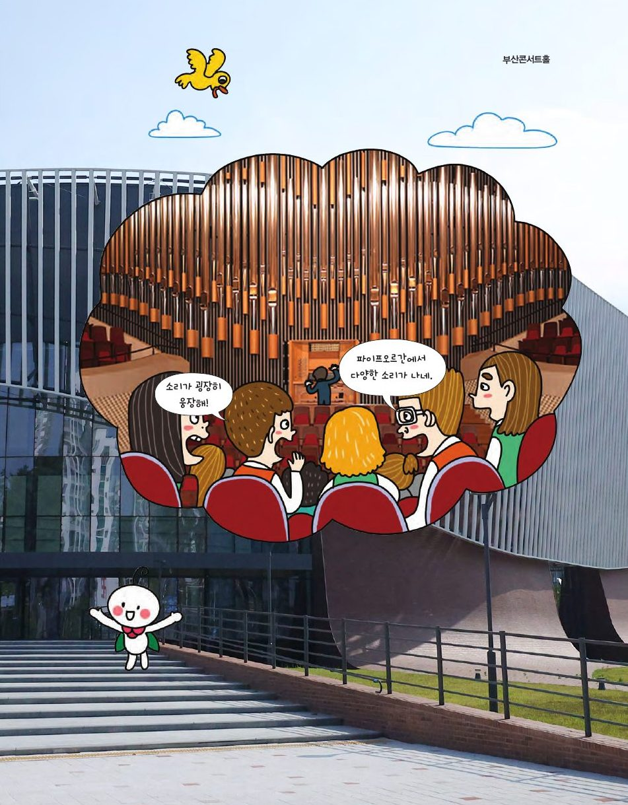

부산콘서트홀의 파이프오르간은 길이 5cm부터 10m까지 4,423개의 파이프로 소리를 내요. 웅장한 울림 속에 숨은 수학적 원리를 찾아보세요. 🔊 소리를 켜 두세요!
★ 이 단원에서는 — 피타고라스 음계의 원리를 이해하고 계산하여 악기를 만들 수 있다.

📍 부산콘서트홀한쪽이 막힌 관을 불면 길이에 따라 다른 높이의 소리가 나요. 관을 눌러 소리를 듣고 진동수를 기록해 보세요. (시뮬레이션: 진동수 ≈ 343 m/s ÷ (4 × 길이))
| 관의 길이(cm) | 진동수(Hz) | 음 높이 |
|---|
길이가 길수록 진동수는 작아지고(반비례), 진동수가 클수록 음은 높아요. 길이 1:2 → 진동수 2:1, 즉 한 옥타브(8도) 차이!
'도'의 현 길이를 1이라 하고 두 규칙만으로 모든 음을 만들어 보세요. 각 단계에서 어떤 규칙을 쓸지 고르세요.
| 음계 | 도 | 레 | 미 | 파 | 솔 | 라 | 시 | 높은 도 |
|---|---|---|---|---|---|---|---|---|
| 현의 길이 | 1 | ? | ? | ? | ? | ? | ? | 1/2 |
도 1, 레 8/9, 미 64/81, 파 3/4, 솔 2/3, 라 16/27, 시 128/243, 높은 도 1/2. '파'는 높은 도(1/2)에서 5도 내려가(÷2/3 = ×3/2) 3/4예요.
피타고라스 음계는 완전 5도는 아름답지만 3화음(도·미·솔)은 조금 거슬려요. 3화음의 진동수 비가 4:5:6이 되도록 새로 조율한 것이 순정률이에요. 두 음계의 '미'를 비교해 들어 보세요.
| 도 | 레 | 미 | 파 | 솔 | 라 | 시 | 높은 도 | |
|---|---|---|---|---|---|---|---|---|
| 진동수(도=1) | 1 | 9/8 | 5/4 | 4/3 | 3/2 | 5/3 | 15/8 | 2 |
| 현의 길이(반비례) | 1 | 8/9 | 4/5 | 3/4 | 2/3 | 3/5 | 8/15 | 1/2 |
파=4/3이므로 라 = 4/3 × 5/4 = 5/3. 솔=3/2이므로 시 = 3/2 × 5/4 = 15/8. 피타고라스 미(81/64 ≈ 1.266)와 순정률 미(5/4 = 1.25)는 미세하게 달라요 — 화음으로 들으면 차이가 느껴져요.
'도' 관의 길이를 정하면 순정률 비(현의 길이 비)로 나머지 관의 길이가 나와요. 관을 눌러 연주해 보고, 실제 투명 관을 그 길이로 잘라 팬플루트를 만들어 보세요.
| 음 | 도 | 레 | 미 | 파 | 솔 | 라 | 시 | 높은 도 |
|---|---|---|---|---|---|---|---|---|
| 현의 길이 비 | 1 | 8/9 | 4/5 | 3/4 | 2/3 | 3/5 | 8/15 | 1/2 |
| 관 길이(cm) |